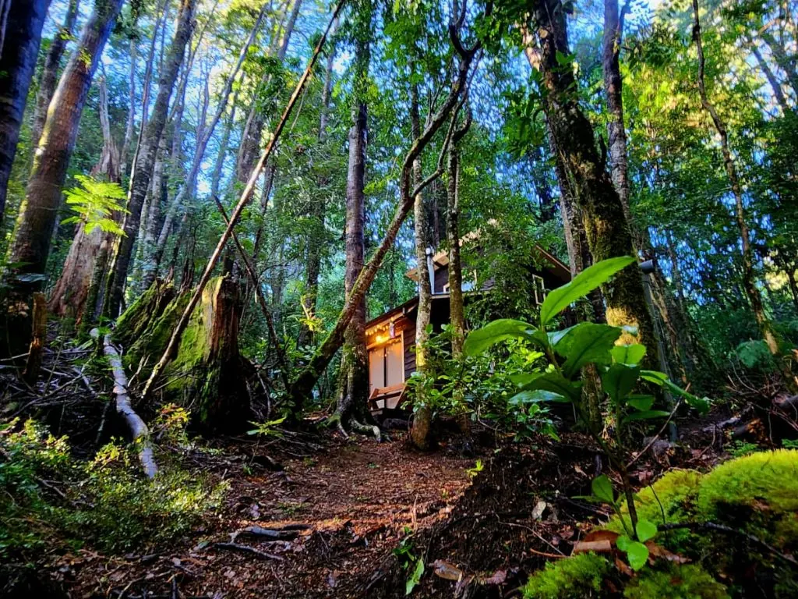
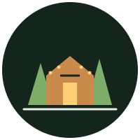
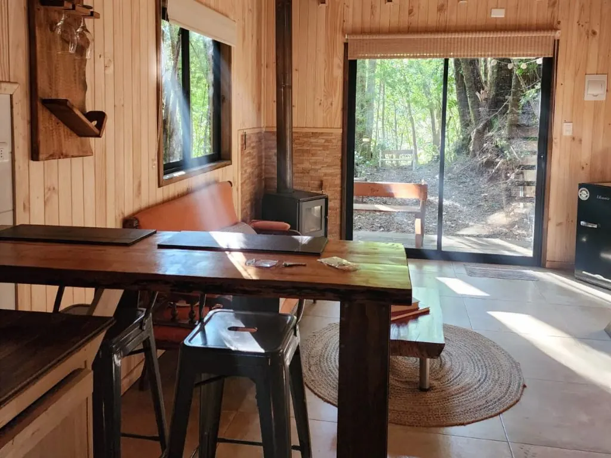
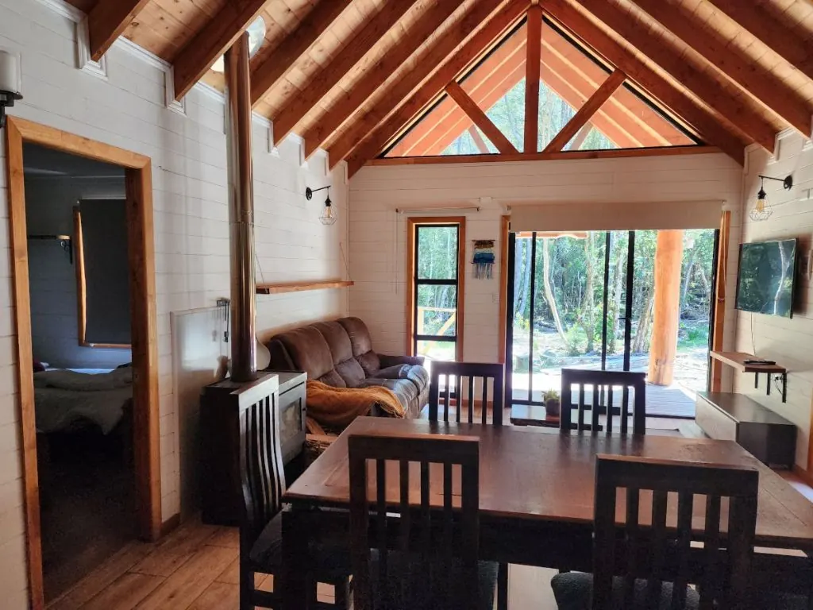
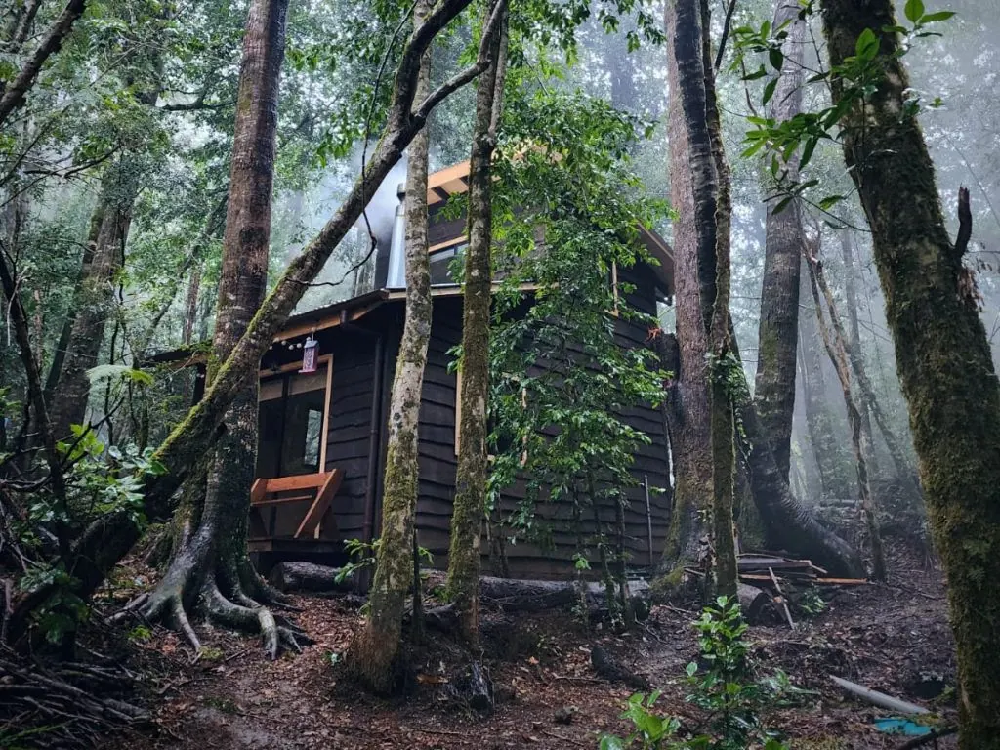
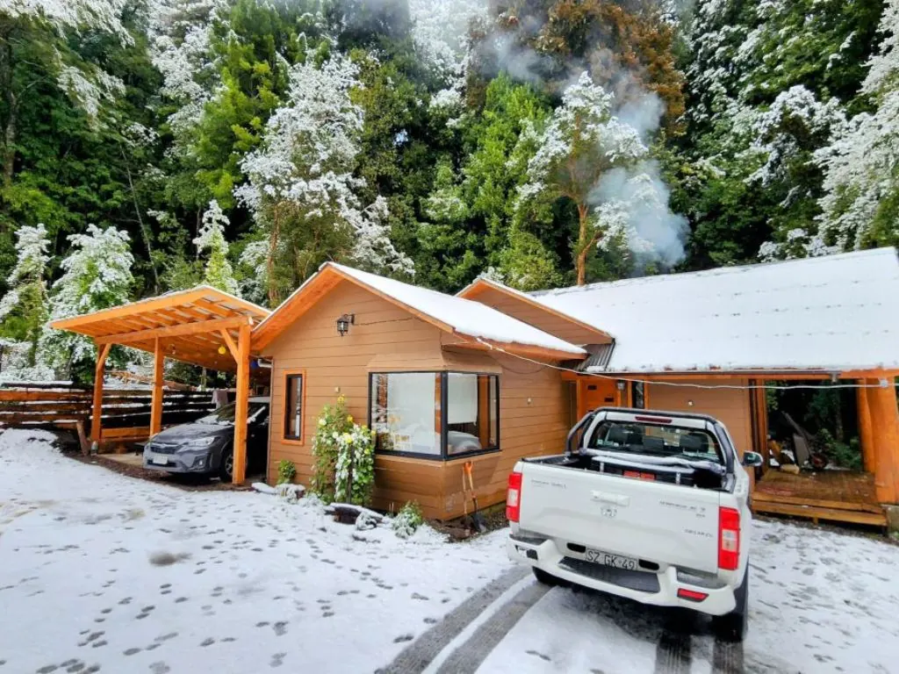
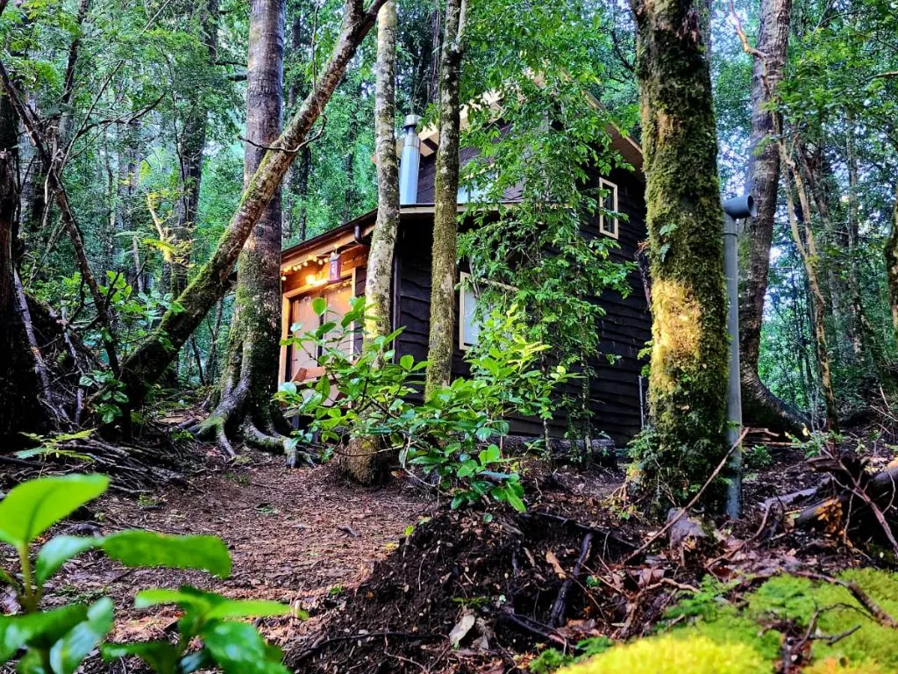
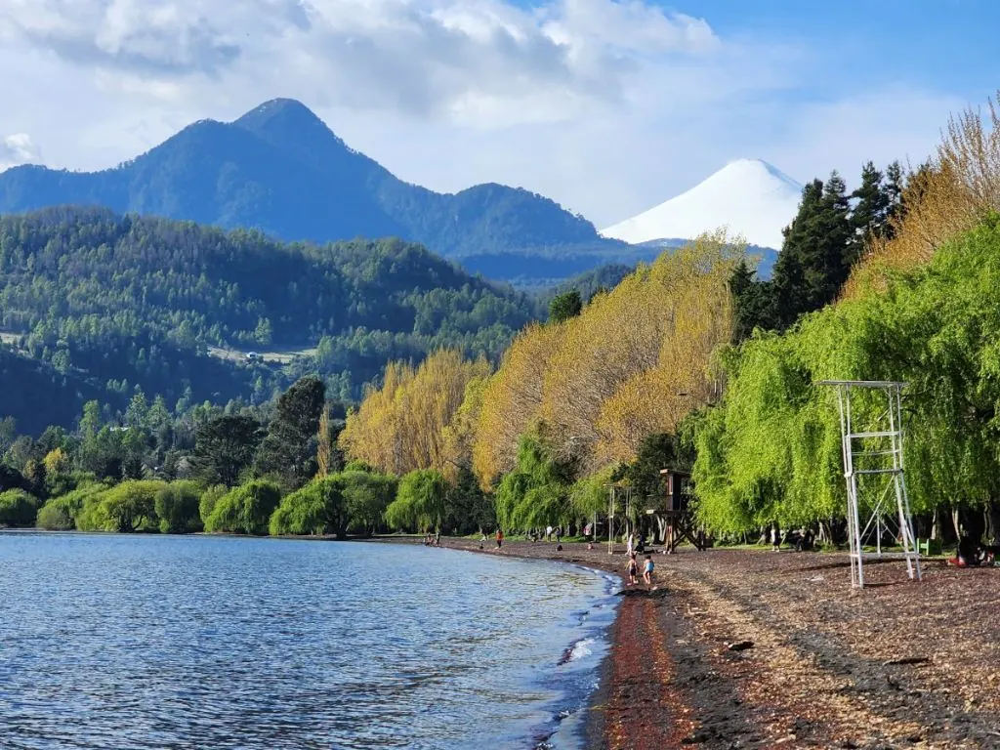
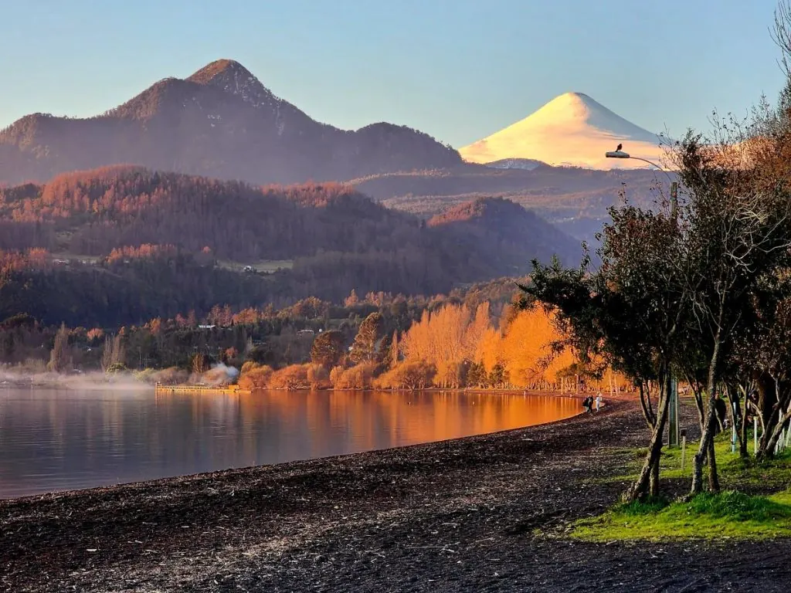

Para parejas
Coigüe
La más compacta: cocina-comedor, sala de estar y estacionamiento privado. Ideal para dos.
2 personas41 m²1 dormitorio

Alto del BosqueCabañas · CoñaripeTres cabañas entre coigües y helechos, a 10 minutos de Coñaripe y 15 de las Termas Geométricas. Leña incluida, WiFi rápido y respuesta en menos de una hora.
Las cabañas
Cada cabaña lleva el nombre de un árbol del bosque que la rodea. Elija según el tamaño de su grupo.

La más compacta: cocina-comedor, sala de estar y estacionamiento privado. Ideal para dos.

Pensada para familias de hasta cuatro, con espacios funcionales y bien aprovechados.

La más amplia: cocina americana, terraza con vista al bosque y baño en suite.
El bosque
Niebla en otoño, nieve en invierno, verde intenso en primavera y lagos tibios en verano. Siempre vale la pena volver.





Qué hay cerca
Camino a Los Cajones, km 9,5. Desconectado, pero cerca de los mejores panoramas de la zona.
Reserve directo con nosotros: mejor tarifa, sin comisiones y respuesta en menos de una hora.
Escribir por WhatsAppBoceto preparado con las fotos públicas de Cabañas Alto del Bosque. En el sitio final van sus fotos, textos y tarifas actualizadas.
Propuesta de Red Vaeru para Alto del Bosque
Garantía de portada: primero ven su portada terminada. Si no les convence, no pagan nada. Si les gusta, firmamos contrato y pagan el 50% para comenzar.
Hablar con Jorge por WhatsApp Ver el portafolio de Red Vaeru ↗